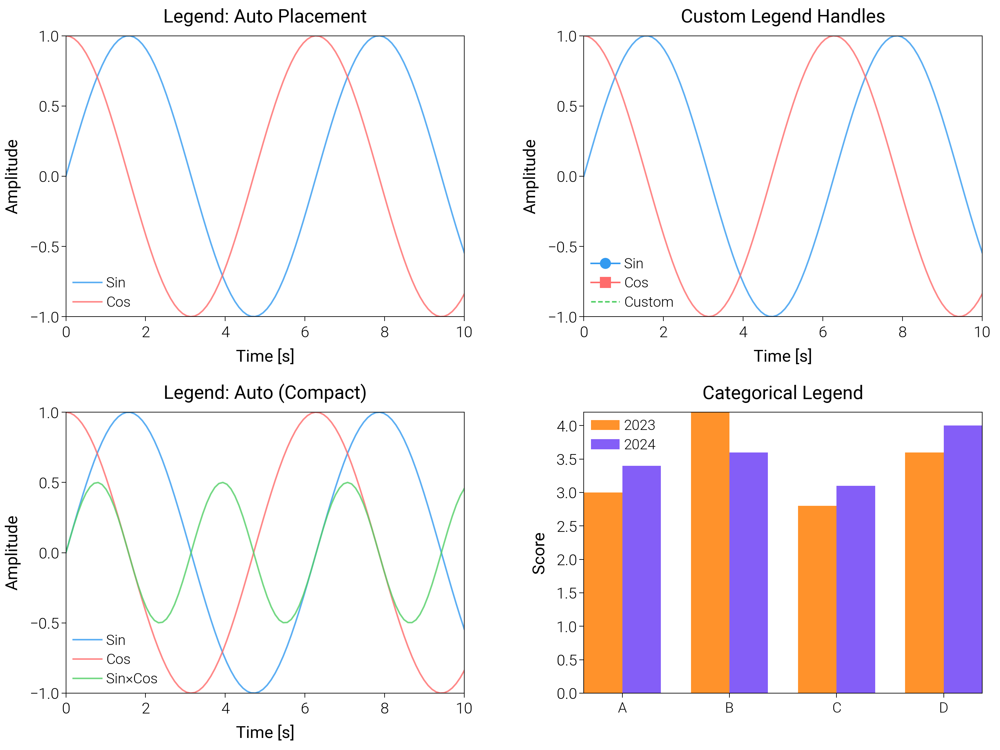

Note
Go to the end to download the full example code.
Legends¶
Legend customization.
import numpy as np
import matplotlib.pyplot as plt
import matplotlib.patches as mpatches
import dartwork_mpl as dm
# Apply scientific style preset
# Default: font.size=7.5, lines.linewidth=0.5, axes.linewidth=0.3
dm.style.use_preset('scientific')
# Generate sample data
x = np.linspace(0, 10, 100)
y1 = np.sin(x)
y2 = np.cos(x)
y3 = np.sin(x) * np.cos(x)
# Create figure
# Double column figure: 17cm width
fig = plt.figure(figsize=(dm.cm2in(17), dm.cm2in(6)), dpi=300)
# Create GridSpec for 3 subplots
gs = fig.add_gridspec(
nrows=1, ncols=3,
left=0.08, right=0.98,
top=0.92, bottom=0.15,
wspace=0.3
)
# Panel A: Multiple legend locations
ax1 = fig.add_subplot(gs[0, 0])
ax1.plot(x, y1, color='dm.blue5', lw=0.7, label='Sin', alpha=0.8)
ax1.plot(x, y2, color='dm.red5', lw=0.7, label='Cos', alpha=0.8)
# Legend: loc='upper right', fontsize=dm.fs(-1), ncol=1
ax1.legend(loc='upper right', fontsize=dm.fs(-1), ncol=1, framealpha=0.9)
ax1.set_xlabel('Time [s]', fontsize=dm.fs(0))
ax1.set_ylabel('Amplitude', fontsize=dm.fs(0))
ax1.set_title('Legend: Upper Right', fontsize=dm.fs(1))
ax1.set_xticks([0, 2, 4, 6, 8, 10])
ax1.set_yticks([-1, -0.5, 0, 0.5, 1])
# Panel B: Custom legend handles
ax2 = fig.add_subplot(gs[0, 1])
line1, = ax2.plot(x, y1, color='dm.blue5', lw=0.7, alpha=0.8)
line2, = ax2.plot(x, y2, color='dm.red5', lw=0.7, alpha=0.8)
# Create custom handles: explicit marker and line styles
from matplotlib.lines import Line2D
custom_handles = [
Line2D([0], [0], color='dm.blue5', lw=0.7, marker='o', markersize=4, label='Sin'),
Line2D([0], [0], color='dm.red5', lw=0.7, marker='s', markersize=4, label='Cos'),
Line2D([0], [0], color='dm.green5', lw=0.7, linestyle='--', label='Custom')
]
ax2.legend(handles=custom_handles, loc='lower left', fontsize=dm.fs(-1), ncol=1, framealpha=0.9)
ax2.set_xlabel('Time [s]', fontsize=dm.fs(0))
ax2.set_ylabel('Amplitude', fontsize=dm.fs(0))
ax2.set_title('Custom Legend Handles', fontsize=dm.fs(1))
ax2.set_xticks([0, 2, 4, 6, 8, 10])
ax2.set_yticks([-1, -0.5, 0, 0.5, 1])
# Panel C: Legend outside axes
ax3 = fig.add_subplot(gs[0, 2])
ax3.plot(x, y1, color='dm.blue5', lw=0.7, label='Sin', alpha=0.8)
ax3.plot(x, y2, color='dm.red5', lw=0.7, label='Cos', alpha=0.8)
ax3.plot(x, y3, color='dm.green5', lw=0.7, label='Sin×Cos', alpha=0.8)
# Legend outside: bbox_to_anchor=(1.05, 1), loc='upper left'
ax3.legend(bbox_to_anchor=(1.05, 1), loc='upper left', fontsize=dm.fs(-1),
ncol=1, framealpha=0.9)
ax3.set_xlabel('Time [s]', fontsize=dm.fs(0))
ax3.set_ylabel('Amplitude', fontsize=dm.fs(0))
ax3.set_title('Legend Outside Axes', fontsize=dm.fs(1))
ax3.set_xticks([0, 2, 4, 6, 8, 10])
ax3.set_yticks([-1, -0.5, 0, 0.5, 1])
# Optimize layout
dm.simple_layout(fig, gs=gs)
# Show plot
plt.show()
Total running time of the script: (0 minutes 0.621 seconds)